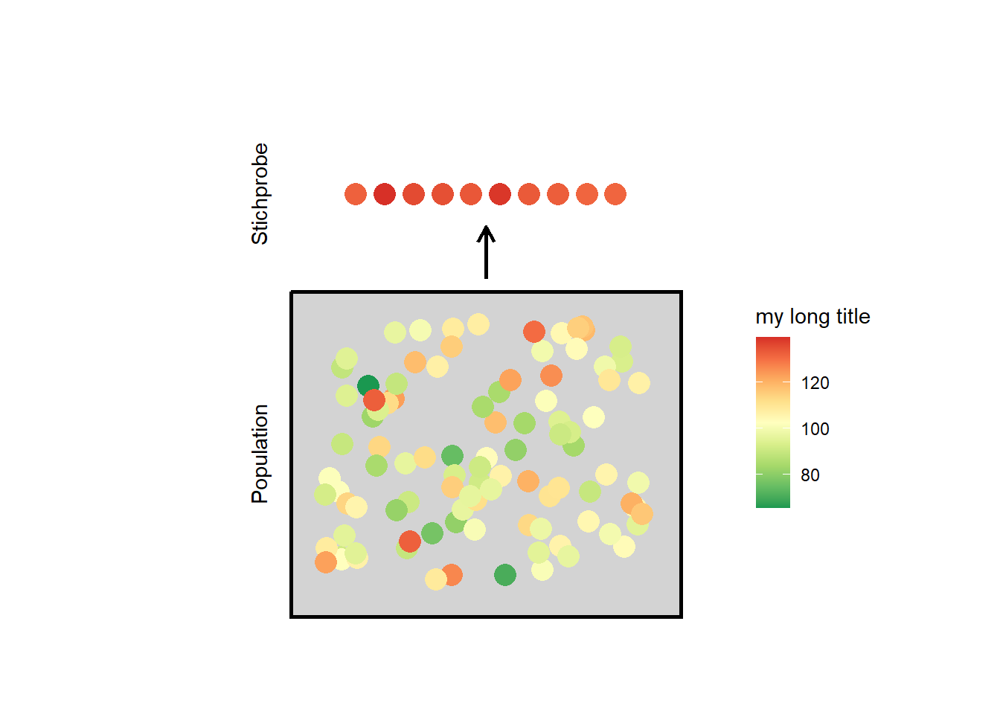

Kapitel 2 Intervallskalierte Merkmale
2.1 Was ist ein intervallskaliertes Merkmal?
Ein Merkmal ist dann intervallskaliert, wenn die einzelnen Beobachtungen in eine natürliche Reihenfolge gebracht werden können und zwischen dem tiefsten und höchsten möglichen Wert, alle erdenklichen Zwischenwerte möglich sind.
Ein Beispiel für ein intervallskaliertes Merkmal ist die Körpertemperatur. Beobachtungen der Körpertemperatur einer lebenden Person sind Werte zwischen ungefähr 10°C und 42°C. Es ist möglich zu sagen, dass eine Person mit 40°C Körpertemperatur eine höhere Temperatur hat als eine mit 38°C Körpertemperatur. Ausserdem sind alle erdenklichen Zwischenwerte möglich, so auch dass bei einer Person eine Körpertemperatur von 37.821239°C gemessen wird.
Ein weiteres Beispiel für ein intervallskaliertes Merkmal ist der Intelligenzquotient IQ. Der IQ bewegt sich normalerweise zwischen 50 und 150, eine Person mit einem IQ von 105 hat einen höheren IQ als eine Person mit einem IQ von 103. Ausserdem sind IQ-Werte von 103.12 oder 118.9182 durchaus möglich.
Klicke hier, falls dir verhältnisskalierte Merkmale bekannt sind
Die folgende Diskussion ist auch auf verhältnisskalierte Merkmale anwendbar. Letztere sind intervallskalierte Merkmale, welche einen absoluten Nullpunkt aufweisen.2.2 Wie kann eine intervallskaliertes Merkmal beschrieben werden?
Eine Veterinärin möchte herausfinden, welche Körpertemperatur Enten aufweisen. Dazu untersucht sie 40 Enten und misst die Körpertemperaturen 42.01, 41.72, 41.51, 41.52, 41.5, 41.6, 41.46, 41.81, 42.14, 41.82, 42.06, 41.53, 41.66, 41.65, 41.46, 41.48, 41.92, 41.58, 41.32, 41.58, 41.81, 41.7, 41.62, 41.52, 41.89, 41.53, 41.67, 41.43, 42.18, 41.52, 41.82, 41.96, 41.8, 41.54, 41.88, 41.69, 41.92, 41.35, 41.07, 41.67.
Für einen Menschen ist es ziemlich schwierig direkt aus der Sichtung dieser Zahlen zu begreifen, welche Körpertemperatur Enten haben. Ein Mensch kann sich jedoch helfen, indem er die Zahlen zusammenfasst.
2.2.1 Verteilung
Um die Zahlen zusammenzufassen, kann die Veterinärin zum Beispiel Temperaturabschnitte von \(0.2\)°C betrachten und zählen wie viele Beobachtungen sie in den jeweiligen Abschnitten gemacht hat. Diese Zähldaten können tabellarisch oder grafisch mit einem Balkendiagramm dargestellt werden. Letzteres wird ein Histogramm genannt.

Aufgrund dieser Darstellung kann die Veterinärin nun sehen, wie häufig welche Körpertemperature sind. Dies wird die Verteilung des Merkmals genannt. Sie bemerkt zum Beispiel, dass Beobachtungen der Körpertemperatur rund um 41.6°C am häufigsten sind und tiefere und höhere Temperaturen seltener vorkommen. Auf einen Blick sieht sie auch, dass die Temperatur aller Enten zwischen 41°C und 42.2°C war.
Die Verteilung eines Merkmals zu kennen ist hilfreich, jedoch in vielen Situationen (z. B. in der Kommunikation) noch zu komplex. Einfacher ist es die Komplexität einer Verteilung auf zwei Faktoren herunterzubrechen: Die Zentralität und die Variabilität einse Merkmals.
2.2.2 Zentralität
Mit der Zentralität ist ein Wert gemeint, welcher die zentrale Tendenz des Merkmals abbildet. Um die Zentralität zu messen gibt es drei Möglichkeiten:
- Der Modus ist der am häufigsten vorkommende Wert. Im Beispiel ist das der Wert 41.52, welcher 3 mal und damit am häufigsten vorkommt.
- Wenn die Werte des Merkmals aufsteigend sortiert werden und der Wert betrachtet wird, welcher die Beobachtungen in eine tiefere und eine höhere Hälfte teilt, dann wird dieser Wert als Median bezeichnet. Bei einer geraden Anzahl Beobachtungen, wird in der Regel der Durchschnittswert der beiden mittigsten Beobachtungen verwendet. Im Beispiel haben wir 40 Beobachtugen. Der Median entspricht also dem Durchschnittswert zwischen dem 20. und dem 21. der aufsteigend sortierten Werte 41.07, 41.32, 41.35, 41.43, 41.46, 41.46, 41.48, 41.5, 41.51, 41.52, 41.52, 41.52, 41.53, 41.53, 41.54, 41.58, 41.58, 41.6, 41.62, 41.65, 41.66, 41.67, 41.67, 41.69, 41.7, 41.72, 41.8, 41.81, 41.81, 41.82, 41.82, 41.88, 41.89, 41.92, 41.92, 41.96, 42.01, 42.06, 42.14, 42.18, also 41.655.
- Das arithmetische Mittel bezeichnet, was gemeinhin mit Durchschnitt gemeint ist. Wenn wir die erste von insgesamt \(n\) Beobachtung mit \(x_1\) und die letzte Beobachtung mit \(x_n\) bezeichnen, so ist das aritmethische Mittel \[\bar{x} = \frac{1}{n}\sum^n_{i=1} x_i\] Im Beispiel ist das arithmetische Mittel der Körpertemperaturen 41.6725.
Hinweis. Erklärung der Formel: Hier wird zum ersten Mal eine Formel verwendet. \(\sum\) steht für die Summe von allen Beobachtungen \(x_i\), wenn der Index \(i\) in \(1\)-Schritten von der Zahl unter dem Summenzeichen \(i=1\) bis zu der Zahl oben am Summenzeichen \(i=n\) läuft. In unserem Beispiel ist \(n=40\), also ist \(i = 1, 2, 3, 4, \ldots, 39, 40\). Der Teil \(\sum^n_{i=1} x_i\) bedeutet also nichts anderes als \(x_1 + x_2 + \ldots + x_{39} + x_{40}\), also die Summe aller Beobachtungen. \(\frac{1}{n}\) bedeutet, dass wir diese Summe jetzt noch durch die Anzahl Beobachtungen teilen.
Welchen Einfluss haben die verschiedenen Einflussgrössen: Dies wird in Übung 2.2 erklärt.
Jedes dieser Masse für die Zentralität hat Vor- und Nachteile und sie werden dementsprechend in unterschiedlichen Situationen eingesetzt, siehe Übungen.
2.3 Übungen
Übung 2.1
- Versuch selbst ein Histogramm der Daten oben (Enten_n40.sav) mit Jamovi zu erstellen und begründe, weshalb es nicht gleich aussieht wie das Histogramm oben.
- Berechne zusätzlich das arithmetische Mittel und die Standardabweichung des Merkmals.
Klicke hier, um deine Lösung zu überprüfen.
Lösung.


Abbildung 2.1: Links: Jamovi-Anleitung zur Erstellung des Histogramms; rechts: Histogramm der Temperatur.
Das Histogramm, siehe Abbildung 2.1 sieht nicht gleich aus, da Jamovi die Temperaturabschnitte kürzer gewählt hat nämlich bei 0.125°C statt 0.2°C wie oben im Text. In Jamovi gibt es aktuell keine Möglichkeit die Abschnittsweite anzupassen. Ein Histogramm sieht immer anders aus je nach ausgewählter Abschnittsweite.
TODO
Übung 2.2
- TODO
- TODO
Klicke hier, um deine Lösung zu überprüfen.
Lösung. Text..